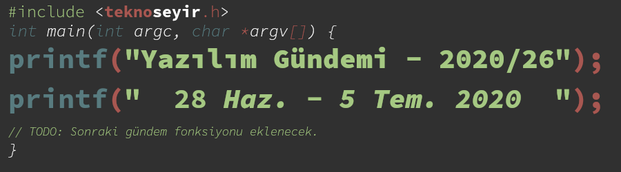

Yazılım Gündemi - 2020/26 [TASLAK]
29 Haziran - 5 Temmuz 2020 (Yayınlanmadı)

< Önceki Gündem | 29 Haziran - 5 Temmuz 2020 |
Bu sayfa 2020 yılında yazmakta olduğum son Yazılım Gündemi yazısının taslak halidir. Bu gündemde değerlendirilecek olan haberler aşağıdaki listedeki bağlantılardır. Yazılım Gündemlerine ara vermeye karar verdiğim için bu şekilde kaldı ama yine de bakmak isteyenler olabilir diye paylaşmak istedim.
Haberler
- Why the KDE community is #MovingToGitlab | GitLab
- Godot Engine - Godot 4.0 gets SDF based real-time global illumination
- Lua 5.4 readme
- Release v3.0.0-beta.16 · vuejs/vue-next · GitHub
- The end of the Redis adventure - <antirez>
- https://twitter.com/glenmaddern/status/1278252319646367744
- CodeFund
- Google Online Security Blog: System hardening in Android 11
- AWS App2Container – A New Containerizing Tool for Java and .NET Applications …
- Launching docs.github.com - The GitHub Blog
- Common Voice Dataset Release - Mid Year 2020 - Common Voice - Mozilla Discourse
- RedHat Mandrel Makes Java Native
- Pkg.jl telemetry should be opt-in - Internals & Design - JuliaLang
- Apple forcing app developers to implement auto-billing after free trial : ass…
- duckduckgo/Android#527 Domains visited get leaked to DDG servers
- Announcing Pylance: Fast, feature-rich language support for Python in Visual …
- Find Your Most Expensive Lines of Code – Amazon CodeGuru Is Now Generally Ava…
- MIT apologizes, permanently pulls offline huge dataset that taught AI systems…
- PHP: rfc:match_expression_v2
Lisans

Yazılım Gündemi - 2020/26 yazısı Eren Hatırnaz tarafından Creative Commons Atıf-GayriTicari-AynıLisanslaPaylaş 4.0 Uluslararası Lisansı (CC BY-NC-SA 4.0) ile lisanslanmıştır.